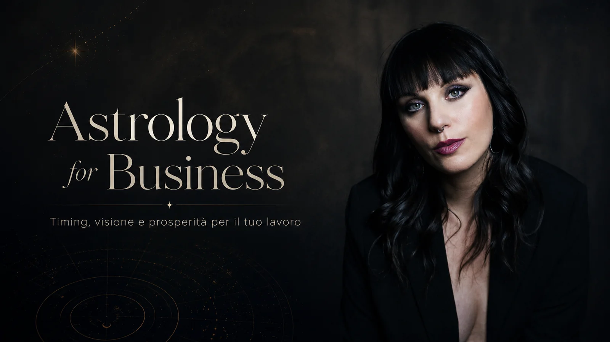

ASTRO FOR BUSINESS · IMPRENDITRICI, FREELANCE E CREATIVE
Anche il tuo business ha un cielo.
Un percorso di dodici mesi per osservare il rapporto fra ciò che sei e ciò che costruisci. Attraverso astrologia, Tarocchi, Cabala e meditazione esploriamo i tuoi cicli, il rapporto con valore, visibilità, abbondanza e le domande che emergono quando devi scegliere.
Raccontami il tuo progetto. Ti risponderò personalmente via email per concordare un incontro.
A chi mi rivolgo
Quello che vivi entra nel tuo lavoro. E viceversa.
Un'attività non cresce separata dalla persona che la costruisce. La fiducia, il rapporto con il denaro, la paura di esporsi, il desiderio di cambiare: ciò che attraversiamo nella vita personale si riflette anche nelle scelte professionali, e il lavoro può rivelarci aspetti di noi che non avevamo ancora osservato.
Questo percorso è pensato per donne imprenditrici, freelance, professioniste e creative: sia per chi ha già un'attività, sia per chi sta dando forma alla propria.
Potresti riconoscerti se…
Stai iniziando qualcosa. Vuoi riflettere sul momento in cui partire, incrociando i transiti con la tua carta natale e valutando anche gli aspetti concreti del progetto.
Sei in una fase di passaggio. Ti domandi quando dare più spazio a un'idea, quando attendere e quando rivedere la direzione.
Il rapporto con il denaro ti interroga. Vuoi esplorare valore, visibilità, capacità di ricevere e ciò che per te significa abbondanza.
Desideri uno sguardo più ampio. Vuoi affiancare alle decisioni quotidiane uno spazio di osservazione personale, intuizione e ascolto.

01
Una sessione iniziale: tu, il lavoro e la tua attività
Lettura approfondita della tua carta natale, con attenzione a lavoro, denaro, vocazione e visibilità. Sinastria con il cielo della tua attività oppure osservazione del periodo e delle date da valutare se devi ancora avviarla.
02
Una roadmap astrologica annuale
Visione dei transiti dell’anno: tuoi e dell’attività. Osserviamo le fasi di possibile espansione, revisione o cambiamento e i cicli della Cabala come ulteriore strumento di riflessione.
03
Un check astrologico dopo sei mesi
Rivediamo il periodo attraversato, ciò che è cambiato e i temi che emergono per la seconda parte dell’anno.
04
Quattro sessioni strategiche con il Tarocco di Marsiglia
Incontri dedicati a decisioni, relazioni professionali, ostacoli, nuove idee e domande che nascono nel corso del lavoro.
05
Sei meditazioni guidate, registrate
Pratiche che potrai ripetere in autonomia per ritrovare centratura e ascolto durante il percorso. Sono contenuti registrati, distinti dai sette incontri individuali.
06
Supporto via email per dodici mesi
Uno spazio di confronto per brevi domande e consulti collegati ai temi affrontati nel percorso, tra un incontro e il successivo.
Il calendario dei sette incontri si concorda con Francesca in funzione del percorso. Le sei meditazioni guidate sono fruibili come registrazioni; non sono sei sessioni live aggiuntive.
Per chi sta iniziando
Non hai ancora una partita IVA? Puoi partire da qui.
Astro for Business è anche per chi sta ancora dando forma alla propria attività.
Partiamo dalla tua carta natale e dai transiti del periodo per osservare simbolicamente i cicli e riflettere anche su possibili date di avvio.
Una prospettiva da affiancare alle valutazioni economiche, fiscali e organizzative.
Il cielo è sempre stato di tutti. La conoscenza, no.
Da dove arrivano queste conoscenze
Una storia che riguarda anche le donne.
Per secoli l’astrologia è stata studiata anche nelle università europee, spesso in relazione alla medicina. La Cabala, nata nella tradizione mistica ebraica, ha attraversato una storia distinta, fatta di studio e interpretazione.
Ma per molte donne le porte di quei luoghi di sapere sono rimaste chiuse a lungo.
Oggi posso avvicinarmi a questi linguaggi, studiarli e farli dialogare con la mia esperienza. Astrologia, Cabala e meditazione accompagnano la mia ricerca personale e il modo in cui costruisco il mio lavoro.
È anche da qui che nasce Astro for Business: condividere ciò che studio e pratico con altre donne che stanno dando forma a qualcosa di loro. Per guardare a sé stesse e al proprio lavoro da una prospettiva diversa, senza rinunciare alle scelte concrete.
07incontri individuali online tra astrologia e Tarocchi
06meditazioni guidate registrate
12mesi di supporto via email
Tempi di semina, tempi di raccolta.
I transiti del tuo business
Quando espandere, quando attendere, quando cambiare rotta.
Ogni attività attraversa cicli. Osservare i transiti della tua carta e quelli del tuo business durante l’anno ci offre una prospettiva sui temi che potrebbero diventare più presenti nelle diverse fasi.
Periodi da dedicare a nuovi progetti e visibilità.
Momenti utili per rivedere collaborazioni, risorse e priorità.
Passaggi in cui interrogarti sul rapporto tra crescita e sostenibilità personale.
Fasi in cui esplorare una nuova direzione professionale.
Accanto all’astrologia, osserviamo anche il ciclo della Cabala, integrandone il linguaggio simbolico nella lettura dell’anno e delle decisioni.
Gli strumenti del percorso
Quattro linguaggi. Un unico sguardo su di te e sul tuo lavoro.
Il lavoro personale e quello professionale si influenzano a vicenda. Astrologia, Tarocco di Marsiglia, Cabala e meditazione diventano quattro modi complementari per osservare il tempo, ciò che accade adesso e la direzione che desideri dare al tuo progetto.
01 / ASTROLOGIA
Il tempo: agire, attendere, osservare
Incrociamo la tua carta natale con i transiti personali e, quando possibile, con il cielo della tua attività. Osserviamo simbolicamente fasi di slancio, attesa e revisione: uno sguardo che può farti notare occasioni trascurate, anche quando rifletti su possibili date di lancio. Le scelte restano ancorate alle condizioni reali del tuo lavoro.
02 / TAROCCO DI MARSIGLIA
Il presente e le scelte possibili
Il Tarocco ci aiuta a dare immagini e parole a ciò che accade ora: decisioni da affrontare, rapporto con il valore e con il denaro, difficoltà a esporsi, disponibilità a ricevere e significato personale dell'abbondanza. Non sceglie al posto tuo: apre domande e prospettive.
03 / CABALA
Visione, intuizione, struttura
Attraverso un sistema di pensiero, archetipi e corrispondenze simboliche, esploriamo il dialogo fra intuizione e struttura. Una prospettiva da portare anche nelle domande su organizzazione, leadership e strategia, senza trasformarla in una formula di gestione aziendale.
04 / MEDITAZIONE
Ampliare la consapevolezza
Sei pratiche guidate, registrate e da utilizzare in autonomia. Uno spazio per rallentare, riconoscere gli automatismi, ampliare la visione e tornare alle tue scelte con maggiore presenza.
Prosperità, valore, denaro
Che cosa significa prosperare, per te?
Nel linguaggio astrologico il denaro parla anche di sicurezza, corpo, radicamento. Di ciò che crediamo di meritare, di quanto riusciamo a ricevere senza sentirci in colpa e del modo in cui trasformiamo i nostri talenti in uno scambio reale.
Dentro Astrology for Business dedicheremo spazio anche alla tua relazione con la prosperità: alla capacità di riconoscere il tuo valore, di sostenerlo nel tempo e di costruire un’attività che possa accogliere la crescita che desideri.
Prosperare significa imparare a ricevere e a stare nel proprio valore senza svalutarsi.
Prenota una call conoscitiva
Ti va di raccontarmi cosa stai costruendo?
Compila il modulo dedicato con nome, cognome, telefono, email e tipologia di attività. Riceverò la richiesta via email e ti proporrò la mia prima disponibilità per una call conoscitiva. Concorderemo direttamente via email giorno e orario, senza prenotazione automatica.
Gli incontri si svolgono online. È possibile suddividere il pagamento in due rate.
Promozione lancio
1.800 €1.450 €
12 mesi · 7 incontri individuali · 6 meditazioni registrate · supporto via email.
Non ho ancora aperto la partita IVA. Posso partecipare?
Sì. Possiamo leggere il tuo Tema Natale in relazione al lavoro e osservare, sul piano astrologico, possibili date per l’avvio dell’attività o di un progetto. Per stabilire la data effettiva restano importanti valutazioni fiscali, legali e organizzative.
Come si studia il cielo di un’azienda già avviata?
Utilizziamo una data significativa per la nascita o l’avvio dell’attività come riferimento simbolico. Su quella carta osserviamo la sinastria con il tuo Tema Natale e i transiti dell’anno. Concorderemo insieme quali dati utilizzare.
Le meditazioni sono incontri dal vivo?
No. Il programma comprende sette incontri individuali online e sei meditazioni guidate registrate, da praticare in autonomia quando preferisci.
Che cosa comprende il supporto via email?
Per dodici mesi puoi scrivere a Francesca per brevi consulti e domande relative ai temi del percorso. Il supporto è pensato per accompagnare gli incontri programmati.
Come si paga?
La quota promozionale è di 1.450 € anziché 1.800 €. È possibile concordare il pagamento tramite bonifico in due rate. Scrivimi per ricevere le indicazioni.
Astrologia, Tarocchi e Cabala sono utilizzati in questo percorso come linguaggi simbolici di riflessione. La scelta di date per aperture o investimenti e le decisioni economiche devono considerare anche valutazioni concrete e consulenze professionali adeguate. Il percorso non garantisce risultati economici e non sostituisce consulenze fiscali, legali o finanziarie.